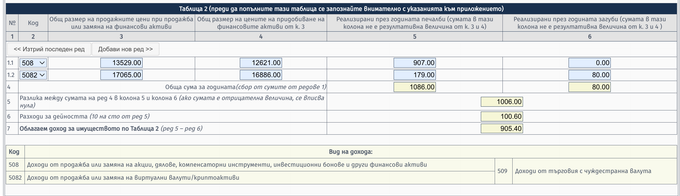
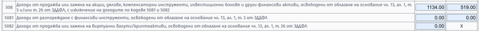
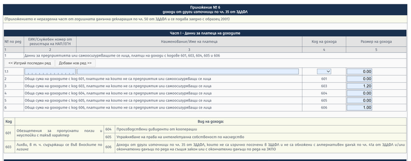
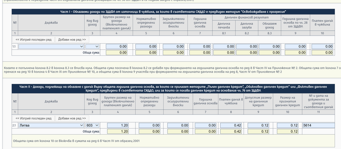
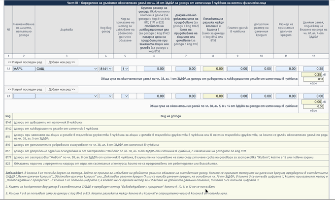
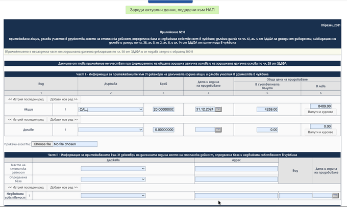

Данъци
Получи ли писмо от НАП за доходите си от инвестиции?

Съдържание
Кратко и по същество — какво да направиш, за да се ориентираш.
Ако си получил писмо от НАП за доходи от инвестиции, вероятно се чудиш откъде да започнеш. Няма нужда от паника — но има нужда от действие, и то бързо. По-долу съм събрала най-важното: как да намериш счетоводител, как да се справиш сам, какви документи ти трябват и къде точно се декларира всеки вид доход. Материалът се отнася за данъчна година 2025 (доходи, придобити от 01.01.2025 до 31.12.2025).
1. Първо и веднага — намери счетоводител
Търси счетоводител, който разбира от инвестиционни продукти — не всеки счетоводител работи с тях. Добро място да намериш такъв е фейсбук групата ИПСБ — там счетоводителите се събират, за да обсъждат казуси. Публикувай въпроса си директно в групата и бързо ще прецениш кой става и кой — не.
2. Нямаш бюджет за счетоводител? Справи се сам
Имам YouTube канал, в който в няколко видеа обяснявам кое къде се попълва и как се пресмята. Каналът е там от години — прегледай съдържанието му: The Crypto Academy (отваря се в нов раздел).
Ако каналът не ти е достатъчен, имам и блог с немалко материали по темата, включително за ДДС: muchakova.com (отваря се в нов раздел).
3. Сайтът на НАП е труден — но има помощ
Да, порталът на НАП е user hostile — не е дружелюбен. Но НАП са осигурили национален телефон: 0700 18 700. Достъп до електронната им платформа имаш с КЕП, с ПИК и по други начини. Обади се, избери от тоналното меню „електронни услуги“ и поискай връзка с оператор — ще те упътят. Съпортът наистина е окей и ще ти спести много време и нерви.
4. Ако работиш със счетоводител — отиди подготвен
Счетоводителят няма да свърши твоята работа вместо теб. За да не губите време (а то и без това е малко) в излишна кореспонденция, отиди подготвен. Ето какво го вълнува, особено когато не се познавате.
Имаш ли други доходи освен инвестиционните?
Това има пряко отношение към евентуална регистрация по ДДС. Прагът за задължителна регистрация е 51 130 евро годишен оборот (чл. 96, ал. 1 ЗДДС). Веднага след натрупването му се смяташ за задължен да се регистрираш, а всеки твой приход след датата на (предполагаемата) регистрация може да се окаже облагаем с ДДС. Търговията с финансови активи и крипто е освободена доставка, но при определени условия влиза в оборота за регистрация — затова твоят счетоводител трябва да прецени има ли щета и какъв е размерът ѝ. Ако се налагат кризисни мерки (например да направиш фирма или временно да спреш дейност, докато се изясни статусът ти), по-добре да го знаеш възможно най-рано.
Точност за 2025 срещу 2026: до 31.12.2025 г. прагът беше 100 000 лв., проследяван за 12 последователни месеца. От 01.01.2026 г. е 51 130 евро (равностойността в евро), но вече се изчислява на календарна година и се следи ежедневно (ДВ бр. 115/30.12.2025).
Осигуряваш ли се? Формираш ли „занятие“?
Ако да — къде, как, на какъв праг и от кога. Това е важно, защото ако търговията ти е прераснала в занятие (търговец по смисъла на Търговския закон), доходът ти вероятно е и осигурителен.
- Обикновено си „чист“, ако не си самоосигуряващо се лице.
- Ако си самоосигуряващо се лице на максималния осигурителен праг — също си окей.
- Ако си под максималния праг — вероятността да доплащаш осигуровки е значителна.
Има и втори проблем със занятието. Ако си бил в майчинство/бащинство или си получавал обезщетение за безработица (обезщетения, които заместват липсващ трудов доход), а през същия период си търгувал/формирал занятие, може да се наложи да върнеш обезщетението на НОИ. Причината: имаш доход, който замества трудовия, което обезсмисля обезщетението. На администрацията не ѝ пука дали този доход е „достатъчен“ — интересува я единствено дали периодът на обезщетението съвпада с периода на занятие по месеци, седмици и дни.
Държавен служител или на трудов договор?
Ако формираш занятие, имам лоша новина: дейността ти (трейдване) може да влезе в противоречие с трудовия ти договор или служебното правоотношение. Това означава максимално бързо да смениш титуляра с майка си, баща си, съпруг(а) или друг пълнолетен близък. Междувременно извади практиката на ЕС относно управлението на лично портфолио (което според Съда на ЕС е лично имущество) и питай писмено юридическия отдел дали нарушаваш правилата с личните си инвестиции. Отговорът им няма да те спаси от данъци, но може да те спаси от дисциплинарно наказание или уволнение.
Документите, без които никой не може да ти помогне
Печалбите и загубите се изчисляват от справката „Trades Confirmation Report“ (или неин еквивалент). В декларацията се посочват цени на придобиване и цени на продажба.
- Общ случай (чл. 33 ЗДДФЛ): цена на продажба − цена на придобиване − 10% нормативно признати разходи = облагаема печалба. Данък 10% (ефективна ставка 9%).
- При занятие: всички продажби − всички покупки − всички допустими и реално направени разходи (вкл. евентуално дължимите осигуровки) = облагаема печалба. Данък 15%.
Когато твърдиш, че си продавал на регулиран пазар или сегмент в ЕС и печалбата ти е необлагаема — трябва да го докажеш. Никой не го приема на доверие. Доказва се пак от Trades Confirmation — там обикновено са описани борсите, през които реално са минали сделките. Без тази справка забрави да намериш счетоводител, който да ти помогне.
Внимание за CFD: освобождаването по чл. 13, ал. 1, т. 3 ЗДДФЛ важи само за сделки на регулиран пазар. CFD-тата (Trading 212, eToro, Plus500 и подобни) са извънборсови договори с брокера — дори базовият актив да е акция от ЕС, печалбата от CFD е облагаема.
Допустимите формати, с които счетоводителите обработват информацията машинно, са xls, xlsx, csv, docx и PDF, направен така, че да допуска OCR разчитане. PNG и снимки от телефон не стават — никой не е длъжен да разчита скрийншоти. Ако не можеш да извадиш справка от брокера, пиши на съпорта или използвай изкуствен интелект.
5. Периодът и двата типа „прецакани“ инвеститори
Периодът, за който трябва да подготвиш документи, е 01.01.2025 – 31.12.2025. Има два вида инвеститори в проблем:
- Такива, които са подали годишна декларация, но са скрили трейдинга.
- Такива, които нищо не са подавали.
Счетоводителят ти трябва да е наясно от кои си, защото сроковете и последиците са различни:
- Първи тип: краен срок за еднократна корекция — 30 септември (чл. 53, ал. 2 ЗДДФЛ). Неподаването на корекция в срок означава глоба.
- Втори тип: подаването може да се забави и след септември, но глобата вероятно е гарантирана — за което счетоводителят няма отговорност.
6. Кое къде се декларира
6.1. Търговия с финансови инструменти (облагаема) — Приложение 5, код 508
Търговията с финансови инструменти се обобщава на един ред, който включва: цена на продажба, цена на придобиване, печалба и загуба. Загубата от текущата година се приспада от печалбата за текущата година при финансови инструменти, валутна търговия и крипто. (Ако например си продал автомобил на загуба — там приспадане няма.) Важно: загубите от финансови инструменти не се пренасят за следващи години — компенсират само в рамките на същата календарна година.
Място: Приложение 5, код 508. ДЦК са с код 508; крипто — код 5082; наследствено крипто или обезщетения от фалирали борси — също код 5082.

6.2. Регулиран пазар в ЕС (необлагаема печалба) — Приложение 13, код 5081
Когато пазарът е регулиран в ЕС, печалбата е необлагаема (чл. 13, ал. 1, т. 3 ЗДДФЛ) и се попълват само цена на придобиване и цена на продажба. Място: Приложение 13, код 5081.

6.3. Лихви — Приложение 6, код 603 (бонуси и yield — код 606)
Лихвите се описват в Приложение 6, код 603. Всякакви бонуси и yield са на същото място, но с код 606.
Не попълвай ред 1.1! На него стоят единствено български платци. IBKR, eToro, Trading 212 и подобни не са от България.

6.4. Удържан данък при източника върху лихвите — Приложение 9
Ако върху платената лихва има удържан данък при източника (което е силно вероятно), трябва да попълниш и Приложение 9, със същия код (603).
Част I или Част II? Зависи от метода в СИДДО с конкретната държава (обикновено Ирландия или Кипър) — „освобождаване с прогресия“ или данъчен кредит. Провери метода в таблицата за премахване на двойното данъчно облагане на сайта на НАП (nra.bg (отваря се в нов раздел), раздел СИДДО), свали таблицата и попълни съответната част.

6.5. Дивиденти — Приложение 8, код 8141
Дивидентите се описват в Приложение 8 (Образец 2081), код 8141. Ставката на окончателния данък е 5% (чл. 38, ал. 1, т. 2 във вр. с чл. 46, ал. 3 ЗДДФЛ). В общия случай:
- Акция с удържан данък върху дивидента → в колона 5 попълваш код 1; тогава няма данък за внасяне в България.
- Акция без удържан данък → в колона 5 попълваш код 3 и внасяш 5% данък в България.

6.6. Налични акции, дялове и имоти в чужбина към 31.12 — Приложение 8
Наличните към 31.12 акции и дялове се попълват в Приложение 8, Част I. Наличните недвижими имоти в чужбина — в същото приложение, Част II.
Никакви други налични активи не подлежат на деклариране — нито физическо злато, нито физическо сребро, нито крипто, нито диаманти. Нищо.

6.7. Декларираме ли ETF-ите?
- Да — когато участваш като акционер.
- Не — когато имаш друга форма на инвестиционно участие.
Имай предвид: дял от дружество ≠ дял от фонд.
6.8. Дата на придобиване
Аз посочвам 31.12. на годината, за която декларирам, вместо да засичам трейд по трейд. На НАП им е важно какво притежаваш, а тази част не касае данъчното облагане — затова декларирането „на едро“ е допустимо на практика. Технически перфектно ли е? Не. Създава ли проблеми? Също не. Затова си спестявам усилието, времето и нервите.
Надявам се това да ти помогне да се ориентираш. При нужда — виж YouTube канала и блога, а ако въпросът е сложен, потърси счетоводител, който наистина разбира от инвестиции.
С уважение,
Марина Мучакова
Материалът е с информативен характер и към 18 септември 2026 г. отразява действащата уредба (ЗДДФЛ, ЗДДС). Той не замества индивидуална данъчна консултация по конкретния ти случай.
Статията е с информационна цел и отразява законодателството към датата на публикуване. Тя не е индивидуална данъчна или правна консултация.

Автор
Марина Мучакова
Данъчен консултант с юридическо образование и над 15 години опит в данъчното право.